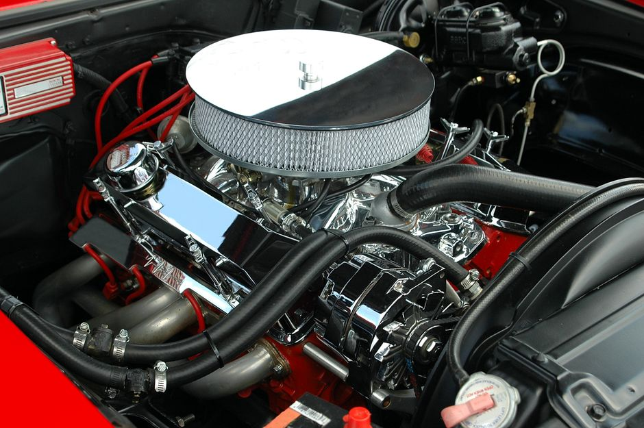
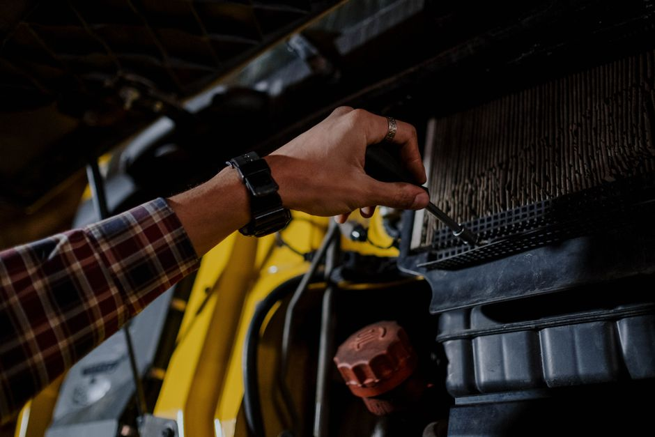

How to Clean and Adjust the Ignition System for Optimal Performance
When it comes to maintaining your car, one of the often overlooked but crucial components is the ignition system. Properly cleaning and adjusting this system can significantly boost your vehicle’s performance and efficiency. In this article, we will walk you through the steps to ensure your ignition system is in top shape, even if you have no prior experience with car maintenance.

Photo: Pixabay / Pexels
Tools You’ll Need
Before you begin, gather the following tools: - A screwdriver (usually a Phillips head) - A wire brush or fine sandpaper - A multimeter - Cleaning fluid (like brake cleaner or carburetor cleaner) - A soft cloth
Step 1: Disconnect the Battery
Safety is key when working with the electrical system. Always disconnect the battery cables to avoid any risk of electric shock. Start by locating the battery under the hood, then carefully disconnect the negative cable first, followed by the positive one.
Step 2: Inspect the Ignition Coils

Photo: cottonbro studio / Pexels
Ignition coils are critical for proper engine operation. Here’s how to clean and inspect them:
- Locate the Ignition Coils: These are usually attached to the spark plugs or engine block.
- Clean the Coils: Use a wire brush or fine sandpaper to remove any dirt or carbon buildup. Make sure to clean both the exterior and interior surfaces.
- Inspect for Damage: Check for any cracks or signs of wear. If you notice any damage, it may need to be replaced.
Example Scenario
Imagine you are working on a 2008 Toyota Camry. You locate the ignition coils near the engine and find a small amount of carbon buildup. Using a wire brush, you gently clean the surface, ensuring no metal particles are left behind.
Step 3: Clean the Spark Plugs
Clean and inspect your spark plugs for any fouling or wear.
- Remove the Spark Plugs: Use a socket wrench to remove the spark plugs. Be careful not to overtighten them as you reinstall them.
- Clean the Spark Plugs: Dip a soft cloth into cleaning fluid and wipe the tips of the spark plugs to remove any carbon or oil buildup.
- Inspect the Spark Plugs: Check for any wear or damage. Replace any that are worn or damaged.
Concrete Example
For a 2015 Honda Civic, remove the spark plugs and use a clean cloth dipped in brake cleaner to wipe each one. Inspect the spark plugs for any signs of wear. Replace one plug that shows significant wear.
Step 4: Adjust the Spark Plugs
Properly adjusting the spark plugs can improve engine performance.
- Clean the Spark Plug Boots: Remove the boots from the spark plugs and clean them with a soft cloth or wire brush.
- Adjust the Spark Plugs: Using a spark plug gap gauge, ensure that the gap between the electrodes is within the manufacturer’s specifications. For most vehicles, this is typically around 0.025 inches (0.635 mm).
Practical Example
For a 2010 Ford Fusion, use a spark plug gap gauge to check and adjust the spark plug gap. The gap should be set to 0.025 inches (0.635 mm) for optimal performance.
Step 5: Reconnect the Battery
Once all components are cleaned and adjusted, it’s time to reconnect the battery:
- Reattach the Positive Cable: Place the positive cable back onto the battery terminal.
- Reattach the Negative Cable: Secure the negative cable to the battery terminal.
- Test the System: Start the engine and check for any misfires or unusual noises. If everything sounds good, your ignition system is now clean and adjusted for optimal performance.
Final Thoughts
By following these steps, you can ensure that your car’s ignition system is clean and functioning efficiently. This simple maintenance can lead to improved fuel efficiency and smoother engine performance. Always remember to handle the electrical components with care to avoid any risks.
Happy driving!
Recommended products
As an Amazon Associate, I earn from qualifying purchases.